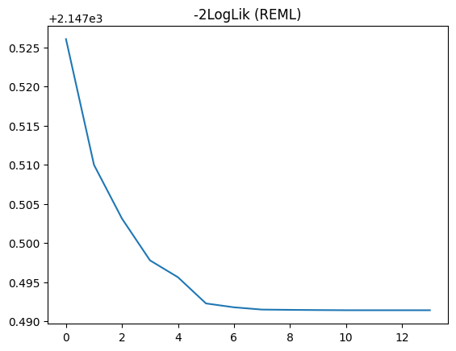

Training models
pyreml fits linear mixed models by direct differentiation of the Restricted Maximum Likelihood (REML) using PyTorch for variance parameter estimation. It benefits from PyTorch parallelization and GPU acceleration.
The fit method
Once a pyreml model is specified, it can be trained with the .fit() method.
model.fit()This runs the full pipeline, calling this series of methods:
.OLS(), Ordinary least square (OLS) initialization of \(\boldsymbol{\beta}\),.REML(), REML estimation of the variance components,.HMME(), Henderson’s mixed model equations (HMME) for the random-effect predictions.
REML is engaged whenever the model carries random effects, a residual variance structure, or several responses ; otherwise the fitting process stops at the OLS step.
HMME is only engaged if the model carries random effects to predict.
OLS
The fixed effects are first estimated by ordinary least squares,
\[ \hat{\boldsymbol{\beta}}_{\text{OLS}} = (\mathbf{X}^\top\mathbf{X})^{-1}\mathbf{X}^\top\mathbf{y}. \]
If the model carries no random effect, an iid residual and a single response, then the OLS solution is already the answer and training stops here.
Otherwise the OLS estimate initializes \(\boldsymbol{\beta}\) before REML. This initialization is always performed by .fit() and is strongly recommended for lower level uses of pyreml.
REML
The per-effect blocks \(\mathbf{G_e} = \mathbf{\Sigma_e} \otimes \mathbf{K_e}\) (see Variance structures) are assembled into the full random-effect covariance by a direct sum over effects:
\[ \mathbf{G} = \bigoplus_\mathbf{e} \mathbf{G_e}, \]
and the marginal covariance of the observations follows as:
\[ \mathbf{V} = \mathbf{Z}\mathbf{G}\mathbf{Z}^\top + \mathbf{R}, \]
with residual variance \(\mathbf{R} = \mathbf{W}\left(\mathbf{\Sigma_R} \otimes \mathbf{K_R}\right)\mathbf{W}^\top\).
Training estimates the variance parameters carried by the \(\mathbf{\Sigma_e}\), \(\mathbf{K_e}\), \(\mathbf{\Sigma_R}\) and \(\mathbf{K_R}\) jointly with \(\boldsymbol{\beta}\), then obtains the random effects \(\mathbf{u}\).
The variance parameters and \(\boldsymbol{\beta}\) are estimated by minimizing the restricted negative log-likelihood (Harville, 1977; Patterson & Thompson, 1971):
\[ -2\ell_{\text{REML}} = \log\lvert\mathbf{V}\rvert + \log\lvert\mathbf{X}^\top\mathbf{V}^{-1}\mathbf{X}\rvert + (\mathbf{y}-\mathbf{X}\boldsymbol{\beta})^\top\mathbf{V}^{-1} (\mathbf{y}-\mathbf{X}\boldsymbol{\beta}). \]
The objective is differentiated by automatic differentiation and optimized with L-BFGS under a strong-Wolfe line search, with Adam as a fallback for steps the line search cannot complete. The variance parameters and \(\boldsymbol{\beta}\) are optimized jointly.
HMME
With the estimated variance components treated as known, the fixed and random effects are obtained jointly from Henderson’s mixed model equations (Henderson, 1975):
\[ \begin{bmatrix} \mathbf{X}^\top\mathbf{R}^{-1}\mathbf{X} & \mathbf{X}^\top\mathbf{R}^{-1}\mathbf{Z} \\ \mathbf{Z}^\top\mathbf{R}^{-1}\mathbf{X} & \mathbf{Z}^\top\mathbf{R}^{-1}\mathbf{Z}+\mathbf{G}^{-1} \end{bmatrix} \begin{bmatrix} \hat{\boldsymbol{\beta}} \\ \hat{\mathbf{u}} \end{bmatrix} = \begin{bmatrix} \mathbf{X}^\top\mathbf{R}^{-1}\mathbf{y} \\ \mathbf{Z}^\top\mathbf{R}^{-1}\mathbf{y} \end{bmatrix}. \]
Their solution gives the best linear unbiased estimator (BLUE) of \(\boldsymbol{\beta}\) and the best linear unbiased predictor (BLUP) of \(\mathbf{u}\), in a single solve. They are formed only when the model has random effects; otherwise REML already delivers \(\boldsymbol{\beta}\).
The same system also yields the error variances of the estimates. See Prediction for the prediction error variance of \(\hat{\mathbf{u}}\).
SMW
The REML computation uses the Sherman–Morrison–Woodbury identity (SMW) (Woodbury, 1950) which can have a very strong impact on the performance of the models depending on their specification.
Interest of SMW for REML
The use of SMW aims at avoiding forming and inverting \(\mathbf{V}\) directly:
\[ \begin{align} \mathbf{V}^{-1} &= \left(\mathbf{Z}\mathbf{G}\mathbf{Z}^{\top} + \mathbf{R}\right)^{-1} \\ &= \mathbf{R}^{-1} - \mathbf{R}^{-1}\mathbf{Z} \mathbf{C}^{-1} \mathbf{Z}^{\top}\mathbf{R}^{-1}, \end{align} \]
with the capacitance matrix \(\mathbf{C}\):
\[ \mathbf{C} = \mathbf{Z}^{\top}\mathbf{R}^{-1}\mathbf{Z} + \mathbf{G}^{-1}. \]
The associated determinant lemma gives the REML log-determinant without forming \(\mathbf{V}\) either:
\[ \log |\mathbf{V}| = \log |\mathbf{R}| + \log |\mathbf{G}| + \log |\mathbf{C}|. \]
Using the properties of direct sum and Kronecker product and direct sum:
\[ \mathbf{G}^{-1} = \bigoplus_e (\mathbf{\Sigma_e}^{-1} \otimes \mathbf{K_e}^{-1}), \]
which can in some circumstances be much more cost efficient than inverting \(\mathbf{V}\) .
For the residual (see this section):
\[ \mathbf{R}^{-1} = \mathbf{W}\left(\mathbf{\Sigma_R}^{-1} \otimes \mathbf{K_R}^{-1}\right)\mathbf{W}^\top, \]
which only stands under some conditions, including:
- if \(\mathbf{W} = \mathbf{I}\);
- or if both \(\mathbf{\Sigma_R}\) and \(\mathbf{K_R}\) are diagonal, as \(\mathbf{W}\) is a mere row-column selector.
Examples of special interest
SMW meaningfulness can be exemplified in these situations:
- with
right_hand = strfor a given effect \(\mathbf{a}\); the inversion of \(\mathbf{K_a}\) is done once for all and cached so that only the left hand (possibly a mere scalar \(\sigma^2_\mathbf{a}\)) needs inversion at each step; - with any diagonal covariance (
left_handin{iid, diag}orright_handin{iid, het}); the inversion turns an \(O(n^3)\) factorization into an \(O(n)\) elementwise operation; - with
left_hand = fa; the inversion of \(\mathbf{\Sigma_a}\) is also done with SMW, as it is approximated by the form \(\mathbf{\Sigma_a} \approx \mathbf{Q_a}\mathbf{\Lambda_a}\mathbf{Q_a}^\top + \mathbf{\Psi_a}\), breaking the problem down even further.
Implementation of SMW
SMW is usually more efficient when \(q < n\), with \(q\) the number of columns of \(\mathbf{Z}\) (the total dimension of \(\mathbf{u}\)) and \(n\) the number of stacked observations (i.e. \(\mathbf{Z}\) is narrower than tall). Indeed, inverting the \(q \times q\) matrix \(\mathbf{C}\) is cheaper than inverting the \(n \times n\) matrix \(\mathbf{V}\) only when \(q < n\).
pyreml mostly conforms to this “dimensional rule”, selecting SMW=True when \(q < n\), SMW=False otherwise.
However:
- using the high-level
from_dataframeconstructor, if the user forcesSMW=TrueorFalsethen their decision takes precedence over any other rule. - using the high-level
from_dataframeconstructor, if all of the following conditions are met then SMW is switched off regardless of the dimensional rule:- Several responses are provided;
- These responses do not share exactly the same missing values;
- The residual covariance \(\mathbf{R}\) is not designed as a diagonal matrix.
Indeed, in this situation \(\mathbf{R}^{-1} \neq \mathbf{W}\left(\mathbf{\Sigma_R}^{-1} \otimes \mathbf{K_R}^{-1}\right)\mathbf{W}^\top\) and inverting the \(n \times n\) matrix \(\mathbf{R}\) is just as expensive as inverting \(\mathbf{V}\) .
- with the low-level constructor:
- if
varmeth_invonly is provided, SMW is forced on; - if
varmethonly is provided, SMW is forced off; - If both methods are available, the dimensional rule applies.
- if
Monitoring
The fit can be followed through the REML objective recorded at each iteration and a convergence flag, both exposed on the model.
| Accessor | Content |
|---|---|
model.opti_REML.loss |
The REML objective at each iteration. |
model.opti_REML.converged |
Whether the convergence criterion was met. |
model.opti_REML.duration |
Wall-clock time of the REML fit, in seconds. |
L-BFGS drives the optimization and Adam steps in only to recover iterations the line search cannot complete; occasional Adam steps near a difficult region of the objective are expected.
As an illustration, the last iterations of an example model REML convergence:
import matplotlib.pyplot as plt
plt.plot(model.opti_REML.loss[-15:-1])
plt.title("-2LogLik (REML)")
plt.show()
Finally, the Akaike Information Criterion (AIC) is available at model.AIC.